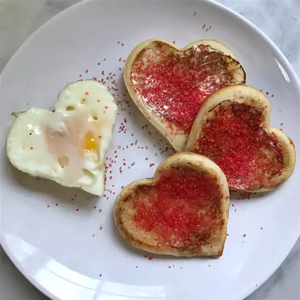

Place milk, sugar, eggs, oil and vanilla in the blender. Add flour and baking powder. Blend until smooth.
Heat a lightly oiled griddle or frying pan over medium high heat. Pour or scoop the batter onto the griddle, using approximately 1/4 cup for each pancake. Brown on both sides and serve hot.
